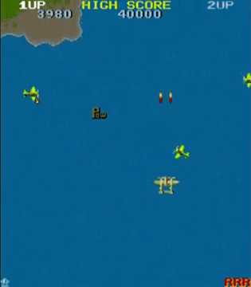
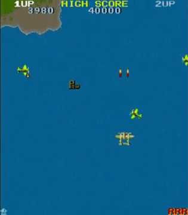

HI! I’M GISELA
PROGRAMMER & GAME DEVELOPER
I am a passionate programmer and game developer with a strong background in C++ and C#.
I have experience working with Unity and Unreal Engine, and I am skilled in designing and implementing gameplay systems, mechanics, and tools.
I am a creative problem solver who enjoys collaborating with cross-functional teams to bring innovative ideas to life.
With a solid understanding of game development principles and a commitment to clean code practices, I am dedicated to creating engaging and immersive gaming experiences.
Contact MeMy Experience
Virtual Reality Lab Technician
ENTI - Escola de Noves Tecnologies, Barcelona
Responsible for inventory management, maintenance, and equipment lending, as well as reservation system management and peripheral documentation.
Involved in design and development of VR experiences and gameplay session broadcasting using the Virtuix Omni platform.
Conducted demonstrations and hardware/software testing, while collaborating in teamwork and creative problem-solving environments.
- C++
- C#
- Kotlin
- Experience Design
- Technical Support
Professional Projects
GAME PROJECTS
A selection of my projects focused on game development, gameplay systems, and interactive experiences.

Little Things
Help Whis find his partner Ky after getting lost in the Dungeon! Solve puzzles, jump through platforms, use the power of colors and more to traverse multiple challenges!

Fragments of the abyss
Immerse yourself in a cursed mansion where every shadow conceals an entity poised to hunt you. Possessed mannequins whisper behind your steps, and angelic statues spring to life to corner you.

Super Pang
Remake of Super Pang Phaser Edition. Super Pang is a game that was originally an arcade game and was later released for Super Nintendo with levels that are completely different from the originals.
 

1942
A classic 1942 remake focused on gameplay structure, built applying SOLID principles and clean code practices.

DEVELOPER PROJECTS
A collection of technical programming projects emphasizing clean architecture, scalability, and maintainability.
TocaCiencia Project
Accessible educational kit based on 3D printed tactile models and NFC interaction. Focused on macro–micro texture exploration, inclusive design for visually impaired students, and curriculum-aligned STEAM learning.

Padel Motion capture project
Sports training application using Rokoko Motion Capture to analyze player movements and compare them with professional padel athletes through animated 3D models.